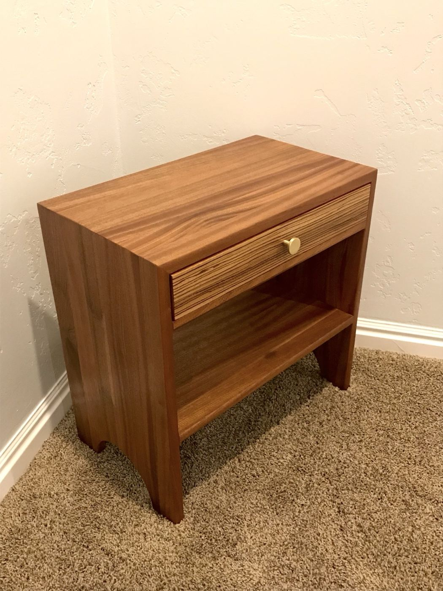
Furniture
Nightstand
Handmade nightstand with a drawer and open shelf.
Real furniture projects, practical advice, and honest opinions about building without breaking the bank.
Explore ProjectsWoodworking AdviceFurniture and useful projects I've built. Here are some of the real projects I've made in my workshop.

Handmade nightstand with a drawer and open shelf.
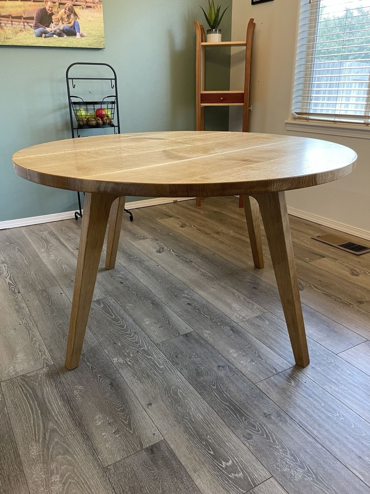
A round wooden dining table with angled legs.
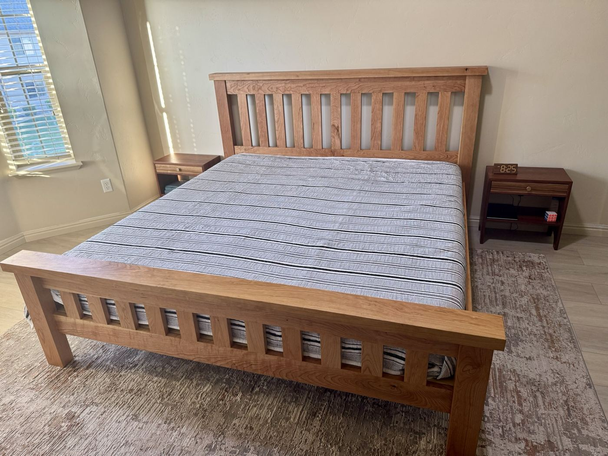
A bed frame with a slatted headboard and footboard.
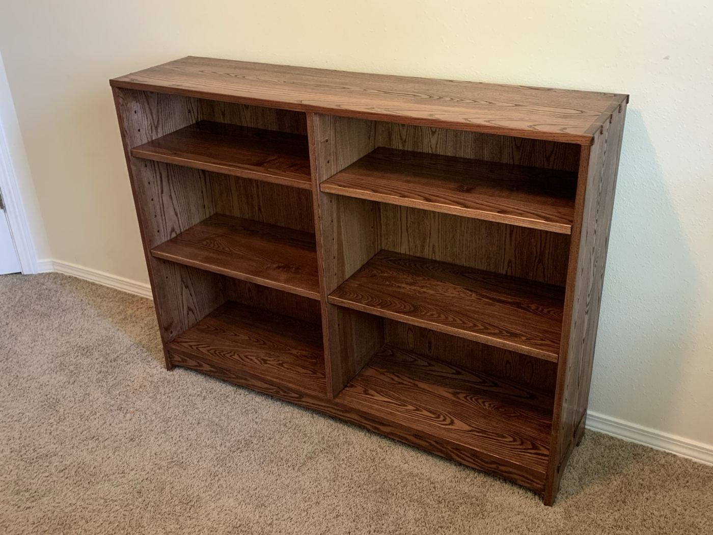
A bookcase with open shelving.
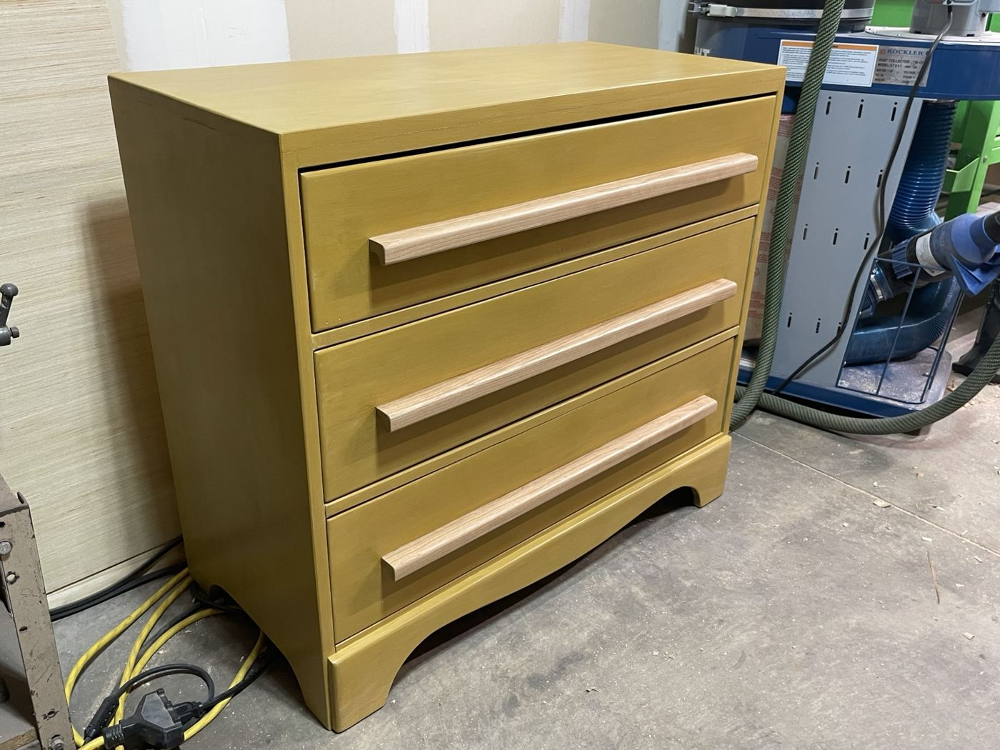
A painted dresser with contrasting drawer pulls.
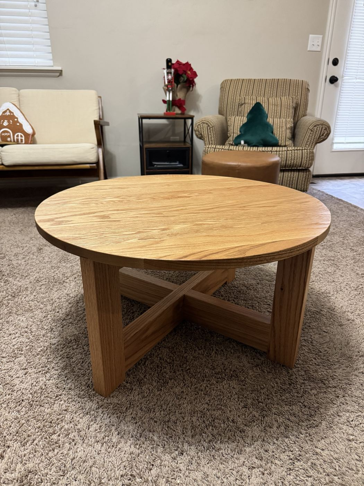
A compact round wooden coffee table.
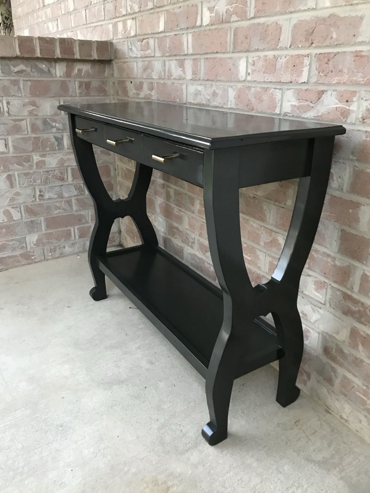
A dark-finished table with curved sides.
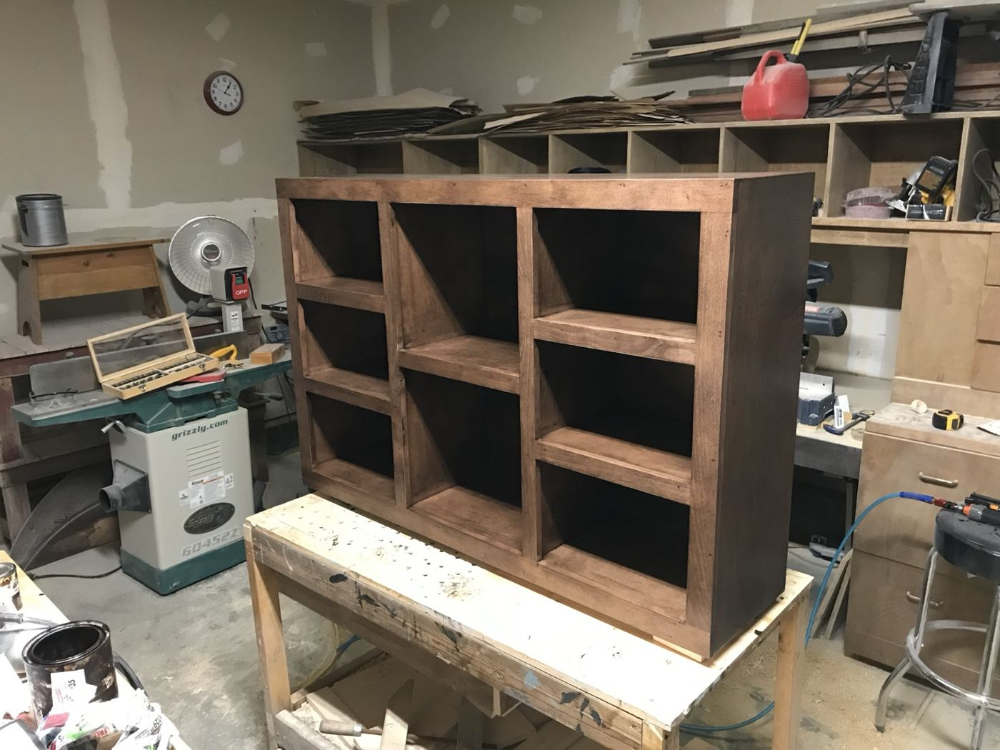
A cubby-style shelving project.
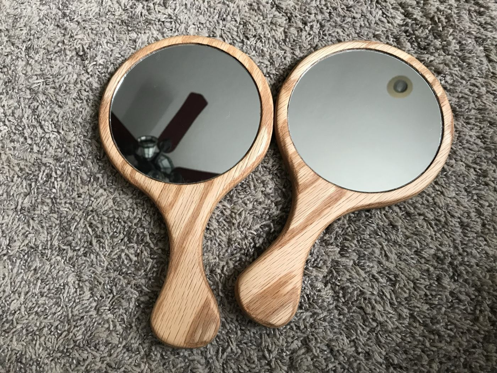
Two handmade wooden-handled mirrors.
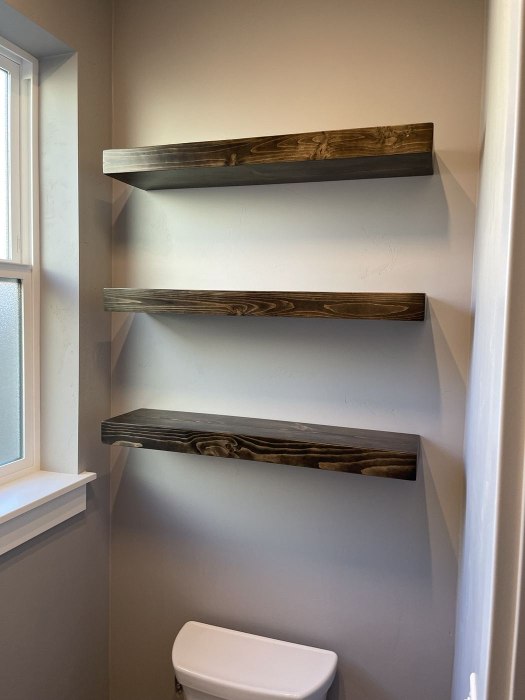
Wall-mounted wooden shelves.
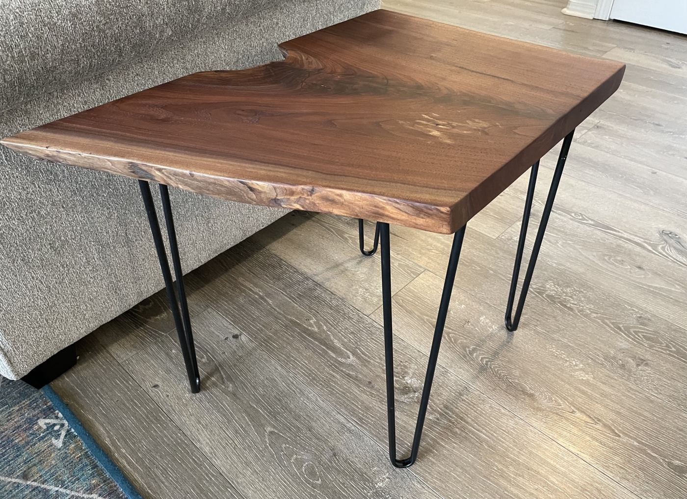
A wood-topped table with metal legs.
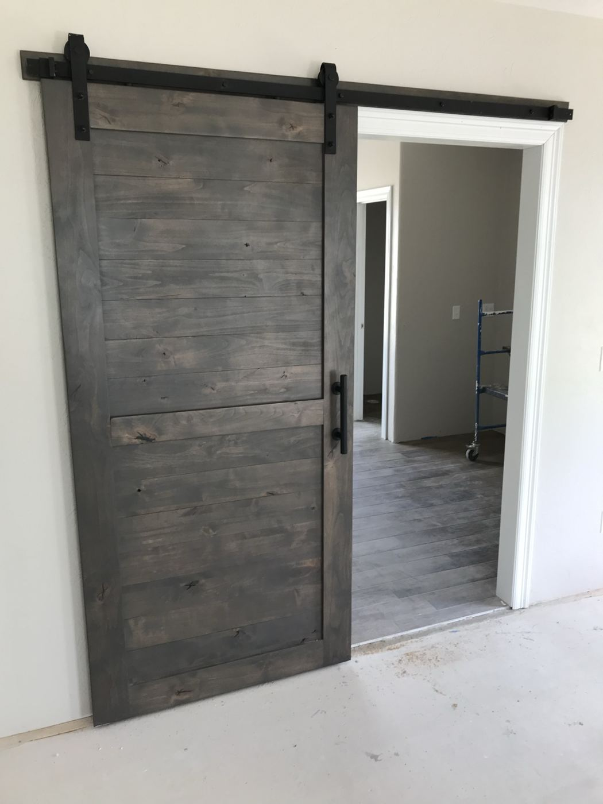
A dark sliding barn door.
Articles are in the works. No weekly schedule, just useful ideas when there's something worth sharing.
What AI helps with, and what still needs a woodworker's judgment.
The tools you actually need, and what can wait.
Why good work doesn't require expensive tools or materials.

Plans for my handmade nightstand with a drawer and open lower shelf. Available through my Etsy shop.
View Nightstand Plans on EtsyJordan's Woodshop is where I share the furniture I build, the techniques I learn, and practical advice for anyone interested in woodworking.
I believe you don't need a workshop full of expensive tools or premium materials to make something worth being proud of. My goal is to share real projects, useful lessons, and ideas that help other people get out into their own workshops and build.